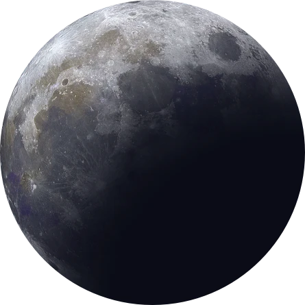

01 Pick your destination

- Moon
- Mars
- Europa
- Titan
Moon
See our planet as you’ve never seen it before. A perfect relaxing trip away to help regain perspective and come back refreshed. While you’re there, take in some history by visiting the Luna 2 and Apollo 11 landing sites.
Avg. distance
384,400 km
Est. travel time
3 days